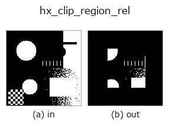

halcon_ext op• Data kinds: region → region
• Call: fullseye.apply(img, "hx_clip_region_rel", a=0.5, b=0.5) (the 2-D model is one image plus two scalar knobs a,b∈[0,1])
• HALCON equivalent: clip_region_rel (the HALCON reference is a useful guide to its meaning and parameters)

*The figure is the actual output on a synthetic 128×128 input. Left: input, right: output. Point clouds are drawn as a top-down scatter (brightness = z), 1-D series as a line plot, volumes as the maximum-intensity projection along z, videos as the middle frame, complex images as magnitude; return values that are not pictures are shown as the values themselves.*
Sweeping knob a (0.1 / 0.5 / 0.9, the other knob at its default):
▸ hx_clip_region_rel: knob a sweep (docs site)
*Knob b does not change the output (measured: identical at 0.1 / 0.5 / 0.9).*
Stages (the ops that come before → this op, left to right):
▸ hx_clip_region_rel: stages (docs site)
On other images (synthetic scene / photo / coins. Top row: inputs, bottom row: their outputs. Knobs at default):
▸ hx_clip_region_rel: other inputs (docs site)
Clip a region relative to its bounding box (shave a fraction a off each side).
Finds the bounding rectangle [y0, y1] × [x0, x1] of the region v > 0.5, keeps only the pixels inside the inner rectangle obtained by shaving 0.5*a of its height and width from each of top, bottom, left and right, and returns a 0/1 float array.
• a → fraction shaved from each side my = int((y1-y0)*0.5*a), mx = int((x1-x0)*0.5*a). a=0 changes nothing; at a=1
only the vicinity of the bounding rectangle's centre lines (about 1 row and 1 column) remains.
• b is unused.
• An empty region is returned empty.
Because the shaving is relative to the bounding rectangle, the meaning "drop the outer x%" is preserved even for regions of different sizes. There is 1 bounding rectangle for the whole region (not per component), so when small, separated components line up, components at the ends may vanish entirely. To cut with a centre rectangle based on the image, use the logical AND with hx_rectangle1_domain.
Border handling: treat everything outside the image as background (0) (measured; tools/impl2/border_probe.py).
• gallery2d_halcon_ext family guide
• Sample-data catalog (download URLs / licences) — 2-D uses skimage.data (BSD/public domain) plus synthetic images; 3-D lists download URLs for real data sources (Stanford, PDS, …).
• Operator provenance and references — the sources of the research/methods this op family came from.
• The canonical algorithm (author, year) and its uses are named in the family usage guide above.
The program below has been verified to run (same input as the figure). In Studio's help this block becomes buttons that load and run it on the spot.
threshold 0.50 0.50 hx_clip_region_rel 0.50 0.50
▸ Load this pipeline · Load & run
• gallery2d_halcon_ext — py -3.11 examples/gallery2d_halcon_ext.py
region as input)identity · reg_erode · reg_dilate · reg_open · reg_close · fill_holes · select_largest · remove_small
halcon_ext)hx_gen_circle · hx_gen_ellipse · hx_gen_rectangle2 · hx_gen_checker_region · hx_gen_grid_region · hx_gabor · hx_fit_surface1 · hx_fit_surface2
*Provenance: ops.py — 2D operator registry. This per-op note is generated by tools/opdocs.py md (do not hand-edit).*
© 2026 Kazufumi Furuse — Fullseye operator documentation. Licensed under Apache-2.0.